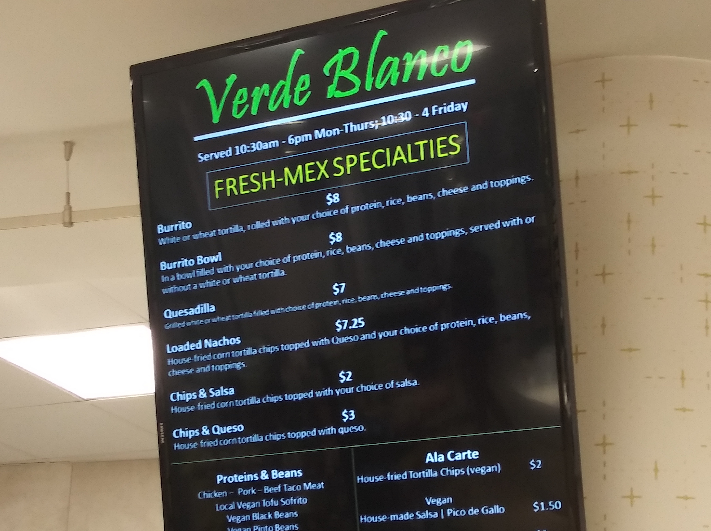
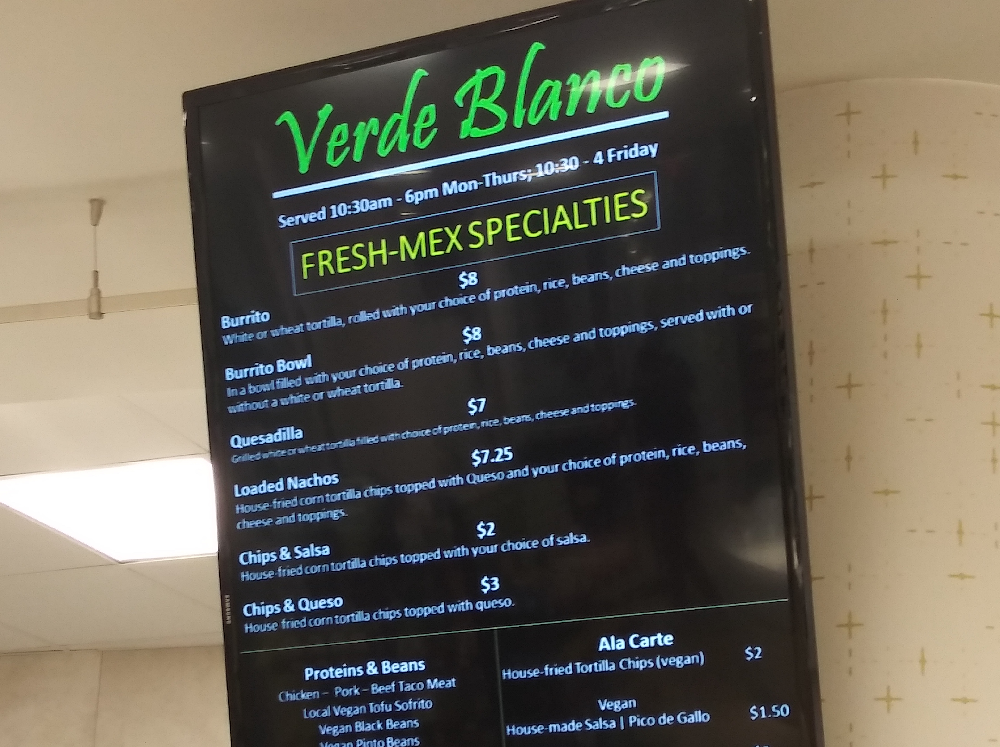
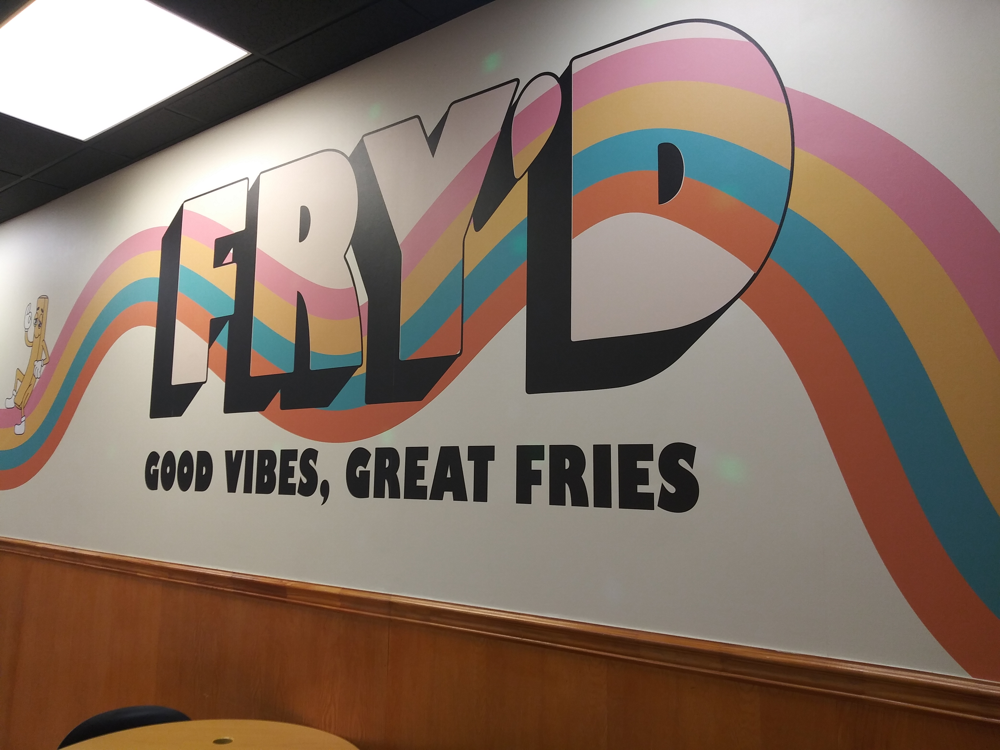
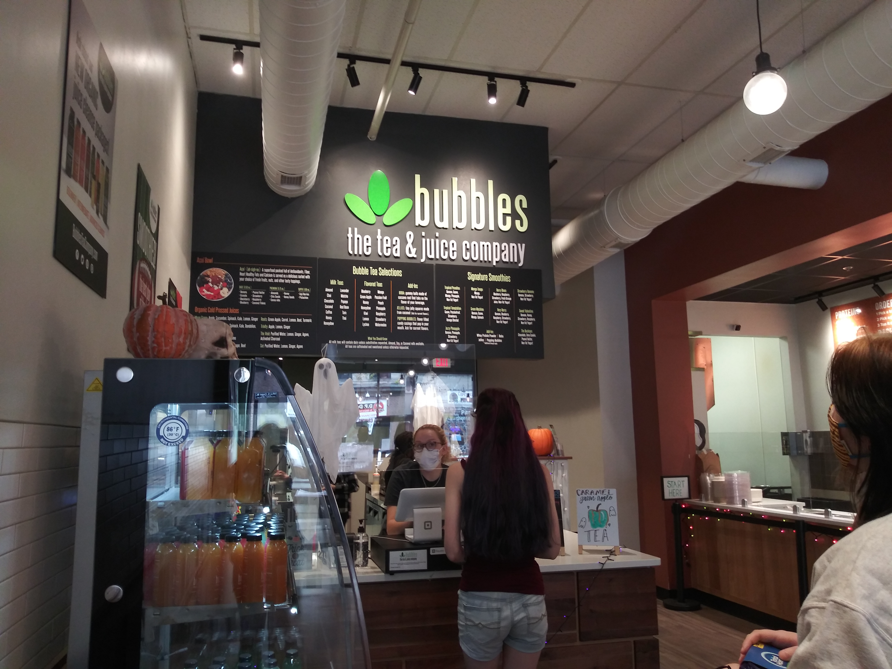
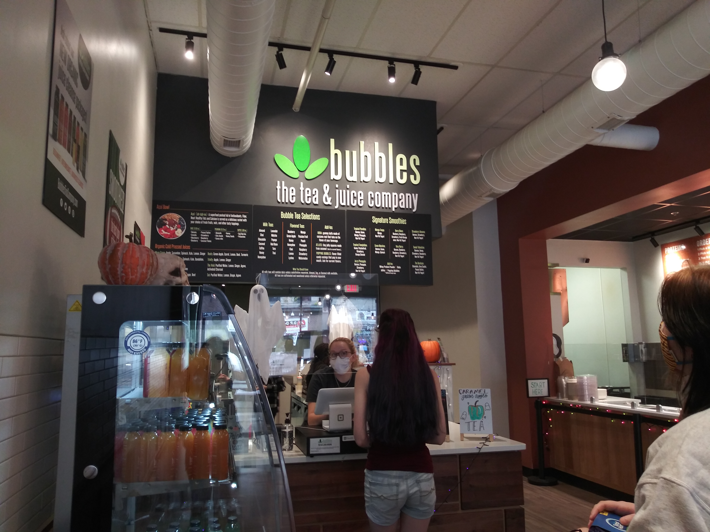
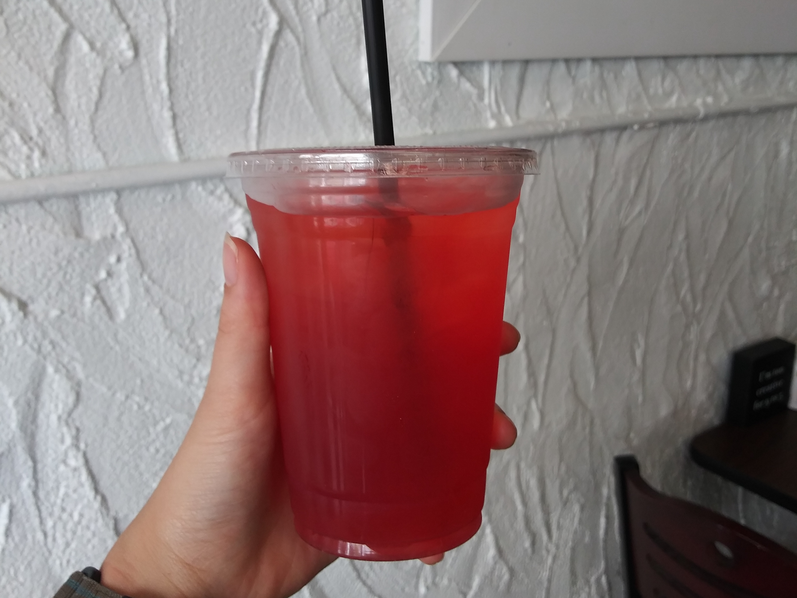
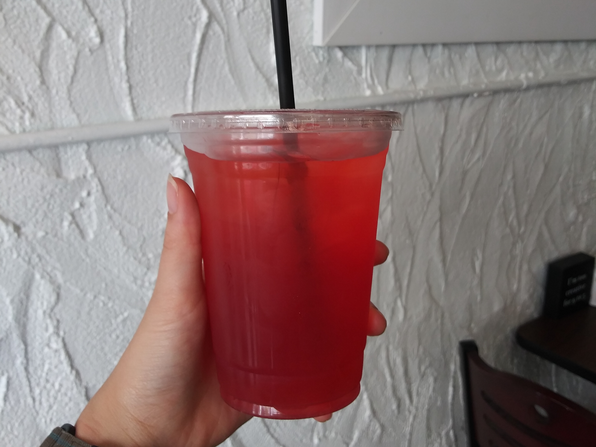

The Front Room Coffeehouse
1 Park Pl | 4th Floor of Baker Center
With daily afternoon meetings inside Baker University Center, Front Room is very convenient whenever I need a quick-pick-me-up iced tea lemonade or warm hot chocolate in the colder months of the semester.

 

West 82
1 Park Pl | 1st Floor of Baker Center
If I need more than just something to quench my thirst, the loaded nachos at West 82’s Verde Blanco station are a tasty and filling on-the-go option. If time permits, I’ll grab a bowl and enjoy the beautiful Athens from Front Room’s back outside seating area.



Fry'd
1 Park Pl | 1st Floor of Baker Center
If I need more than just something to quench my thirst, the loaded nachos at West 82’s Verde Blanco station are a tasty and filling on-the-go option. If time permits, I’ll grab a bowl and enjoy the beautiful Athens from Front Room’s back outside seating area.
 

Bubbles
1 Park Pl | 1st Floor of Baker Center
If I need more than just something to quench my thirst, the loaded nachos at West 82’s Verde Blanco station are a tasty and filling on-the-go option. If time permits, I’ll grab a bowl and enjoy the beautiful Athens from Front Room’s back outside seating area.

 

Odyssey Nutrition
1 Park Pl | 1st Floor of Baker Center
If I need more than just something to quench my thirst, the loaded nachos at West 82’s Verde Blanco station are a tasty and filling on-the-go option. If time permits, I’ll grab a bowl and enjoy the beautiful Athens from Front Room’s back outside seating area.